Our step-by-step guide to easily run as a container on a Windows/Mac/Linux computer.
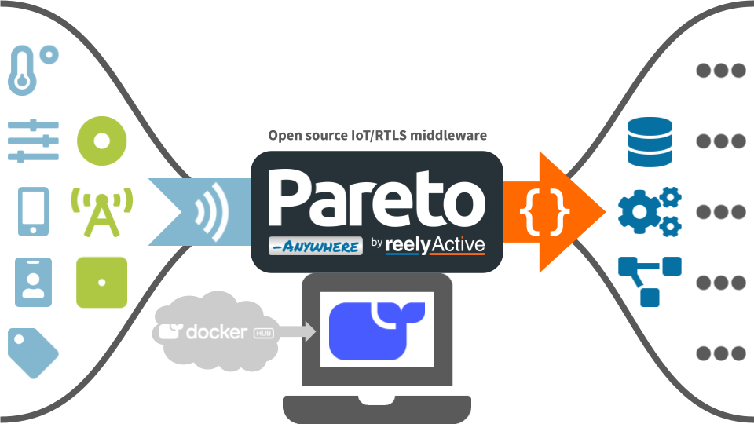
Learn how to run reelyActive's open source IoT/RTLS middleware via a friendly graphical interface.
Tutorials to consider instead
A recent version of Docker Desktop installed.
Commercial use of Docker Desktop in larger enterprises may require a paid subscription: Pricing FAQ.
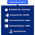
Docker Desktop on Windows will require Windows Subsystem for Linux. ( wsl --install )
Pull the container from Docker Hub, configure and run.
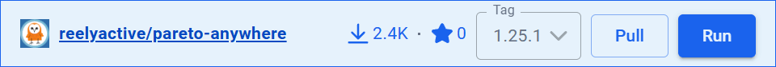
Open Docker Desktop and then:
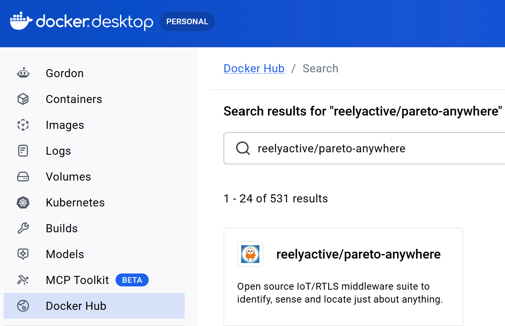
Select the version of Pareto Anywhere from the Tag pull-down, and then click Run.
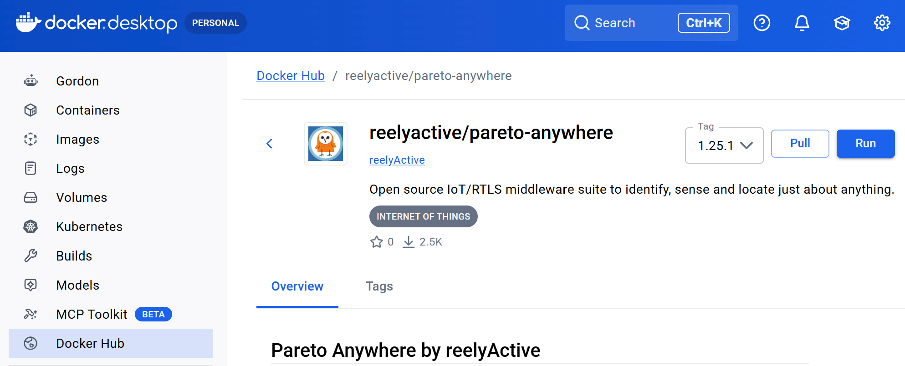
Configure the container:
Click Run to start the container.
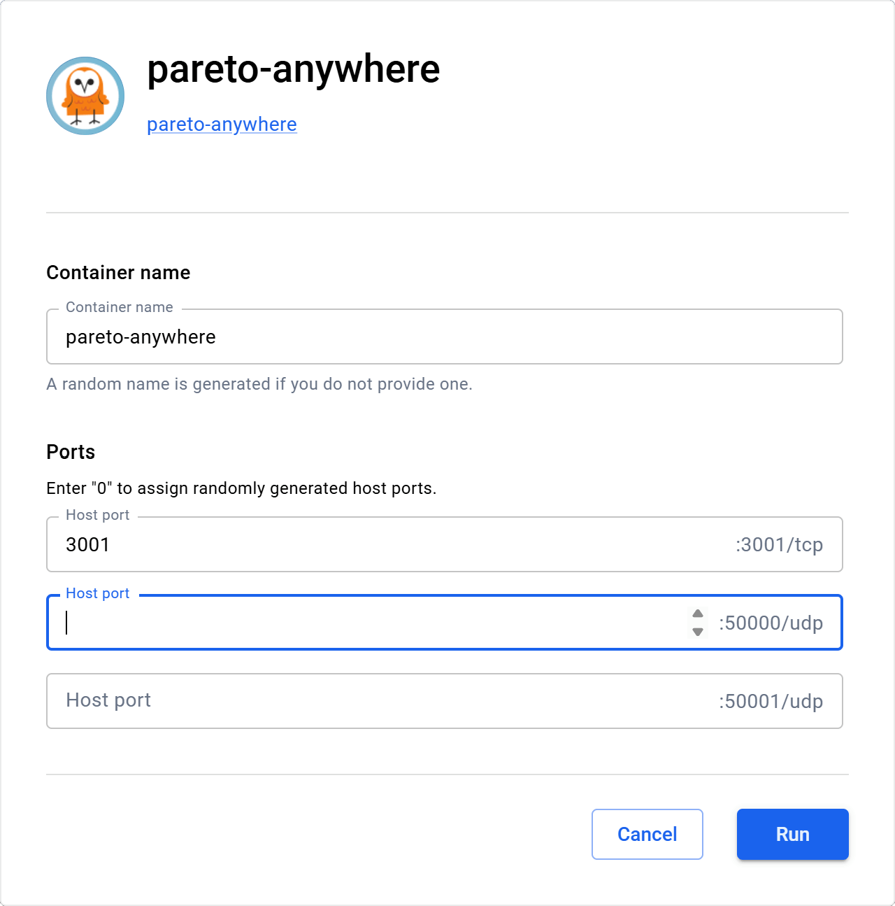
Select the Containers panel to observe the pareto-anywhere container.
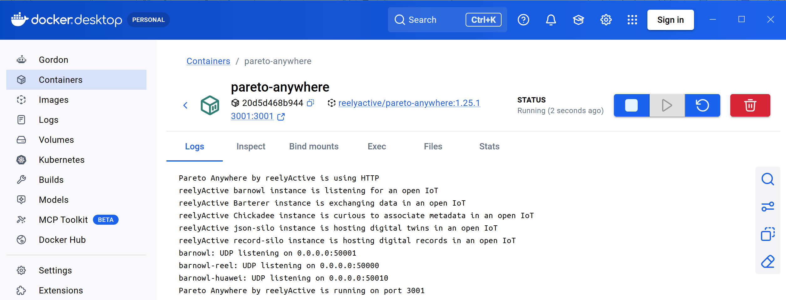
The stop, start, and restart icons can be used to modify the operation of the pareto-anywhere container, as required. Confirm that the container is running, and proceed to Step 2 below.
Confirm that everything works!
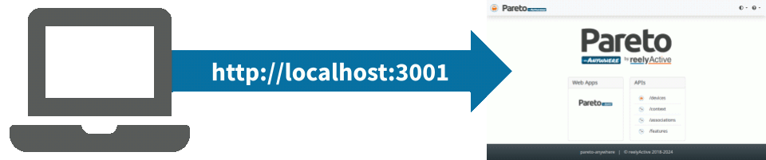
On the computer running Docker Desktop, browse to localhost:3001 to observe Pareto Anywhere running.
Should a source of ambient IoT data be available (see the tabs below), it is possible to validate its integration with Pareto Anywhere, replacing xxx.xxx.xxx.xxx with the PC's IP address, where required.
Pareto Anywhere will automatically listen for ambient Bluetooth Low Energy data forwarded from reelyActive Owl-in-Ones and Minew gateways. Follow the step-by-step tutorials below to forward data from these gateways.
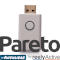
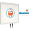
Pareto Anywhere will automatically listen for ambient Bluetooth Low Energy data forwarded from compatible HPE Aruba Networking and Huawei APs. Follow the step-by-step tutorials below to forward data from these access points.
Forward UDP packets from the Huawei AP to the PC on port 50010
Pareto Anywhere will automatically listen for ambient Bluetooth Low Energy data from the PC's onboard radio—if compatible—provided an instance of barnowl-hci is running and forwarding the data. Follow the instructions below to install and run this option.
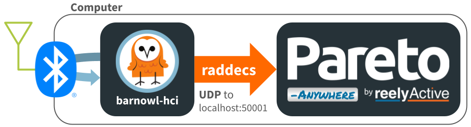
Open a terminal and complete the following:
git clone https://github.com/reelyactive/barnowl-hci.git cd barnowl-hci
npm install 1 min Allow Node.js programs the privilege to initiate scans with the command sudo setcap cap_net_raw+eip $(eval readlink -f `which node`)
Run barnowl-hci once to confirm that it can listen for ambient data:
npm start will output radio decodings (raddecs) to the console for quick-and-dirty testing npm run forwarder will forward raddecs to a local Pareto Anywhere instance Enter Ctrl+C to stop either program.
Pareto Anywhere will automatically listen for ambient Bluetooth Low Energy data forwarded from reelyActive reelceivers on UDP port 50000.
Pareto Anywhere will automatically listen for ambient RAIN RFID data forwarded from compatible Impinj and RF Controls readers.
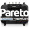
Data from RFC OS will automatically be ingested if running on the same machine (see barnowl-rfcontrols).
Pareto Anywhere will automatically listen for ambient EnOcean Wireless Standard data from a USB dongle connected to the PC provided an instance of barnowl-enocean is running and forwarding the data. Follow the instructions below to install and run automatically each time the Pi boots.
Open a terminal and complete the following:
git clone https://github.com/reelyactive/barnowl-enocean.git cd barnowl-enocean
npm install 1 min Include the user in the dialout group to facilitate serial access to the USB dongle with the command sudo usermod -a -G dialout $USER
Run barnowl-enocean once to confirm that it can listen for ambient data:
npm start will output radio decodings (raddecs) to the console for quick-and-dirty testing npm run forwarder will forward raddecs to a local Pareto Anywhere instance Enter Ctrl+C to stop either program.
Pareto Anywhere now #RunsAtTheEdge on your machine!
Feedback from our user community guides & motivates the continuous evolution of our open source technologies—and our obscure memes—so don't by shy to reach out moving forward!
Our cheatsheet details the raddec, dynamb and spatem JSON output from the Pareto Anywhere open source IoT middleware.
Tutorial prepared with ♥ by jeffyactive.
You can reelyActive's open source efforts directly by contributing code & docs, collectively by sharing across your network, and commercially through our packages.Continue exploring our open architecture and all its applications.
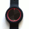